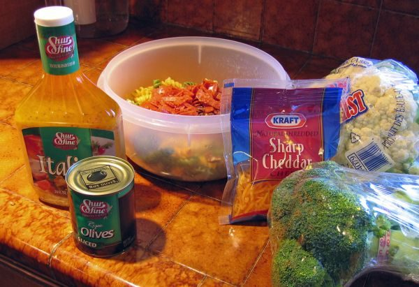

Cauliflower Crunch

Photo: alex.shultz (CC BY 2.0)
A baked cauliflower dish that layers sun-dried tomatoes, garlic and green chilies under frozen cauliflower in cheese sauce, finished with a Parmesan and bread crumb topping.
Directions
- Heat oven to 400 degrees. Heat 1 tbs of the oil in a medium skillet over medium heat until hot. Add tomatoes, garlic and green chilies. Cook 1 to 2 minutes or until thoroughly heated, stirring occasionally. Spread in bottom of ungreased 9 or 10 inch quiche dish or glass pie pan. Top with cauliflower in cheese sauce.
- In a small bowl, combine crumbs, Parmesan and remaining 2 tablespoons of oil. Mix well. Sprinkle over cauliflower mixture.
- Bake 20-22 minutes or until edges are bubbly and crumbs are golden.
- Heat the oven to 400 degrees.
- Heat 1 tablespoon of the oil in a medium skillet over medium heat until hot. Add the sun-dried tomatoes, garlic and green chilies. Cook 1 to 2 minutes, or until thoroughly heated, stirring occasionally.
- Spread the tomato mixture in the bottom of an ungreased 9 or 10 inch quiche dish or glass pie pan. Top with the cauliflower in cheese sauce.
- In a small bowl, combine the bread crumbs, Parmesan and remaining 2 tablespoons of oil. Mix well. Sprinkle over the cauliflower mixture.
- Bake 20-22 minutes, or until the edges are bubbly and the crumbs are golden.
Goes well with
https://lizotte.cool/recipe/cauliflower-crunch.html